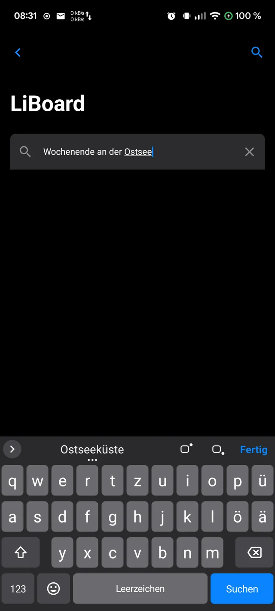
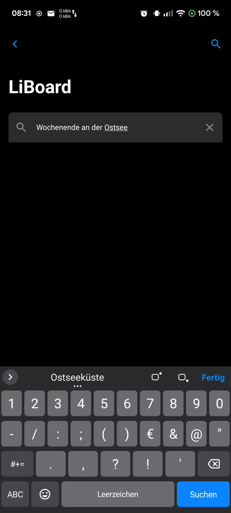
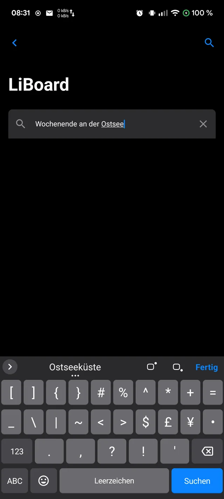
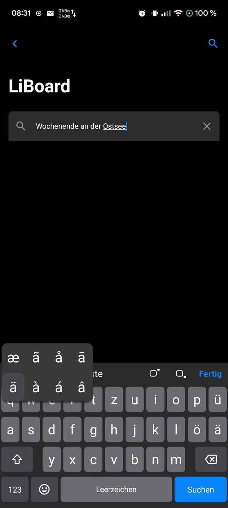
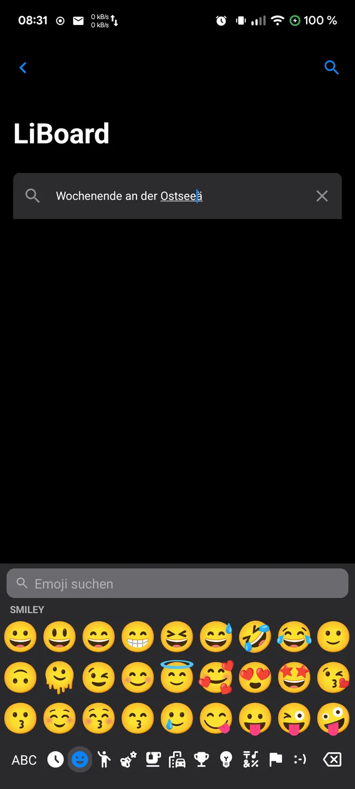
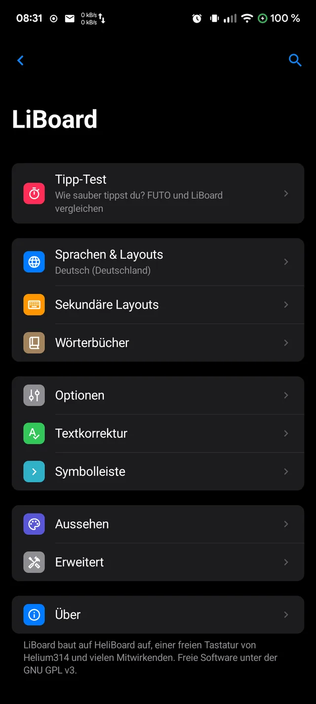
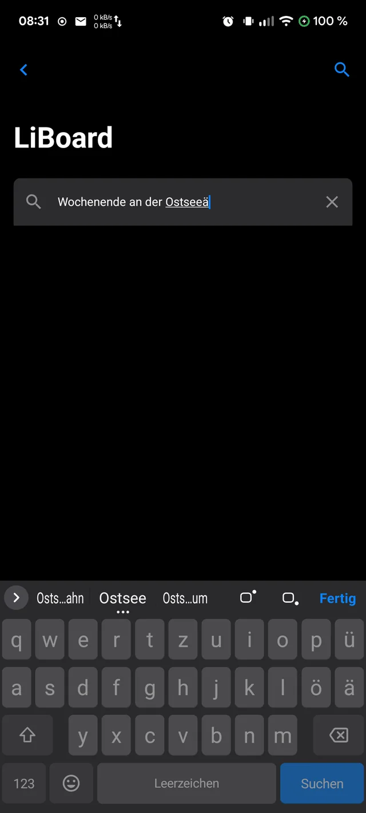

Tippen wie auf dem iPhone.
Auf Android.
Eine Tastatur mit der Ruhe und Ordnung der iPhone-Tastatur – für Android.
Offline, ohne Konto und ganz ohne Internetberechtigung.

Vertraut. Ruhig.
Und nur für dich.
Wer vom iPhone kommt, vermisst oft die Tastatur am meisten. LiBoard übernimmt Proportionen, Anordnung und Gewohnheiten der iPhone-Tastatur – und lässt alles, was du tippst, auf deinem Handy.
Tastatur
Alles an seinem Platz.
Buchstaben, Zahlen und Zeichen liegen dort, wo du sie vom iPhone kennst. Unten immer dieselbe Reihe: 123 · Emoji · Leerzeichen · Aktion.





Trackpad
Die Leertaste
wird zum Trackpad.
Leertaste gedrückt halten – die Tasten werden blass, und dein Finger schiebt den Cursor frei durch den Text. Zeichenweise, zeilenweise, genau dorthin, wo du hinwillst.
- Über die ganze Tastatur – nicht nur auf der Leertaste.
- Loslassen beendet den Modus, ohne ein Leerzeichen zu tippen.
- Kurz wischen auf der Leertaste bewegt den Cursor wie gewohnt.

Funktionen
Und so viel mehr.
Die kleinen Dinge, die Tippen angenehm machen.
Kein leerer Streifen
Die Tastatur reicht bis zum unteren Rand. „Fertig“ oben rechts blendet sie aus – wie auf dem iPhone.
Hoch- und Tiefstellen
x² und x₂ in der Vorschlagsleiste: H₂O, SO₄²⁻, m² – funktioniert in jeder App.
Deutsch und Englisch
Beide Sprachen gleichzeitig – ohne Umschalten, mit Vorschlägen aus beiden Wörterbüchern.
Emoji mit Suche
Alle Kategorien in einem Band, Hautfarben per langem Druck, Suche nach Begriffen. Wahlweise mit einer eigenen Emoji-Schrift.
Tipp-Test
Miss Fehlerquote, Korrekturen und Tempo – und vergleiche mit deiner bisherigen Tastatur. Alles bleibt auf dem Handy.
Einstellungen wie iOS
Gruppierte Listen, große Titel, klare Sprache – nach Apples Human Interface Guidelines.
Datenschutz
Was du tippst,
bleibt bei dir.
Eine Tastatur sieht alles: Passwörter, Nachrichten, Suchen. Deshalb kann LiBoard technisch gar nichts senden.
Herkunft
Aufgebaut auf
HeliBoard.
LiBoard ist ein Fork von HeliBoard, der freien Tastatur von Helium314 und vielen Mitwirkenden – mit derselben bewährten Tipp-Erkennung aus dem Android-Quelltext. LiBoard ändert Aussehen und Bedienung, entfernt die freiwillige Datensammlung und bleibt freie Software unter der GPL-3.0.
Laden
Leg los. Kostenlos.
Version 0.1.0 Beta für Android 5 und neuer. Installiert sich auch neben HeliBoard.
F-Droid
Paketquelle in F-Droid hinzufügen, dann LiBoard suchen und installieren.
Quelle in F-Droid hinzufügen ›Fingerabdruck der Paketquelle
8DA9DEF44C65856A1B098DB7BF876D48514997EF17C7256E23E91EAC6C486500
APK
Direkt herunterladen und installieren. Danach: Einstellungen → System → Tastatur → LiBoard einschalten.
App-Signatur
SHA-256: fdf9c1947bb6b0b5d571ccac64b3bc1ae7ab3367a38dc0927f9d42bcdb1f946a
Quelltext
Jede Zeile einsehbar, alle Versionen zum Herunterladen. Fehler oder Ideen gern im Issue-Tracker.
Entwickelt von Olaf Winkler in Schleswig-Holstein.
Prüfsummen: SHA256SUMS · Beta, weil die Tippgenauigkeit noch weiter verbessert wird.